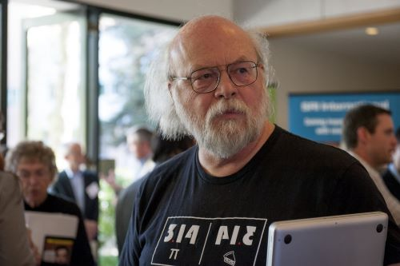

Introducción
James Gosling, nacido el 19 de mayo de 1955 cerca de Calgary, Alberta, Canadá, es un famoso científico de la computación conocido como el padre del lenguaje de programación Java.
Recibió su licenciatura en ciencias de la computación de la Universidad de Calgary en 1977. Para el trabajo de posgrado, dejó Canadá para ir a la Universidad Carnegie Mellon (CMU), donde completó un doctorado en 1983.
Inicios de su carrera
En CMU, Gosling desarrolló una variante en el popular editor de pantallas Emacs y escribió una versión del sistema operativo UNIX para sistemas informáticos multiprocesador. Uno de sus esfuerzos más importantes en CMU fue portar el código p Pascal de UCSD desde una estación de trabajo PERQ para ejecutarlo en un sistema informático DEC VAX escribiendo un emulador VAX.